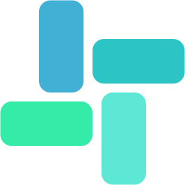
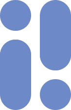
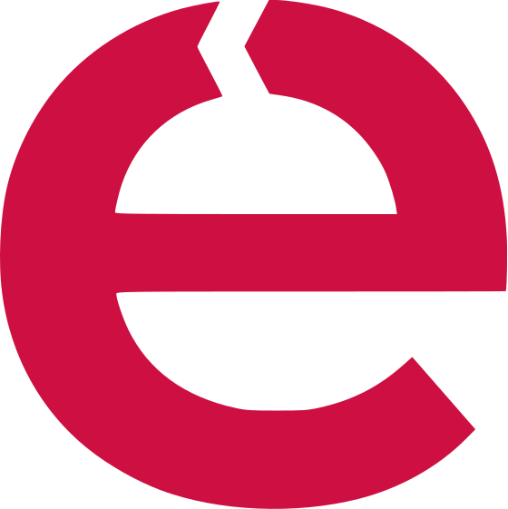
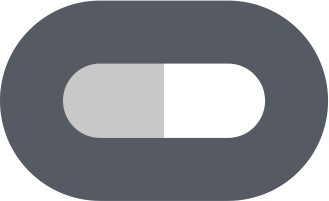

Hey, I'm Laura.
I shape digital products, with expertise
in
Design is a conversation. I make sure
it speaks the

Lite-Tone Laine
Inviso
Enjoy
VR TrainingI shape digital products, with expertise
in
Design is a conversation. I make sure
it speaks the
This SaaS exploration is a personal project I pursued during downtime while working on Laine for Bain & Company. I challenged myself to develop a fast, effective solution to a major business issue: software spending and reliable invoice matching—all within a limited timeframe.
This AI-driven B2B platform helps businesses optimize growth strategies. Developed in Bain & Company's startup incubator, it delivers real-time, actionable insights across marketing, profitability, sales, and customer lifecycle. Unlike traditional tools, Laine automates implementation and continuously refines strategies to drive business growth.
This dashboard for the British Museum combines in-house, digital initiatives, and external data to facilitate strategic operations with AI. It assists managers, financial and marketing departments by predicting future trends, highlighting potential target groups, audience opinions, demographics, and inspiring smarter content delivery.
Enjoy is a well-known Italian car-sharing service providing cars across major Italian cities. Despite popularity, its ratings aren't the best. This case study project aimed to understand system issues by listening to users and designing a smoother, more enjoyable experience by targeting the app's most problematic aspects based on user insights.
This cost-effective, man-machine digital interface improves shooting athletes' training. VR training isn't new for armed forces, and that knowledge opens new frontiers for shooting athletes, especially combined with biofeedback. The developed virtual reality application integrates shooters' electrodermal activity via sensors to help athletes improve focus and performance.
Pet in a Pot is a plant brand with an innovative product: an interactive vase connected to an app teaching people plant care by monitoring conditions and needs. The vase detects people and communicates through cute eyes. The app sends reminders. Its mission educates on proper plant care while raising environmental awareness.